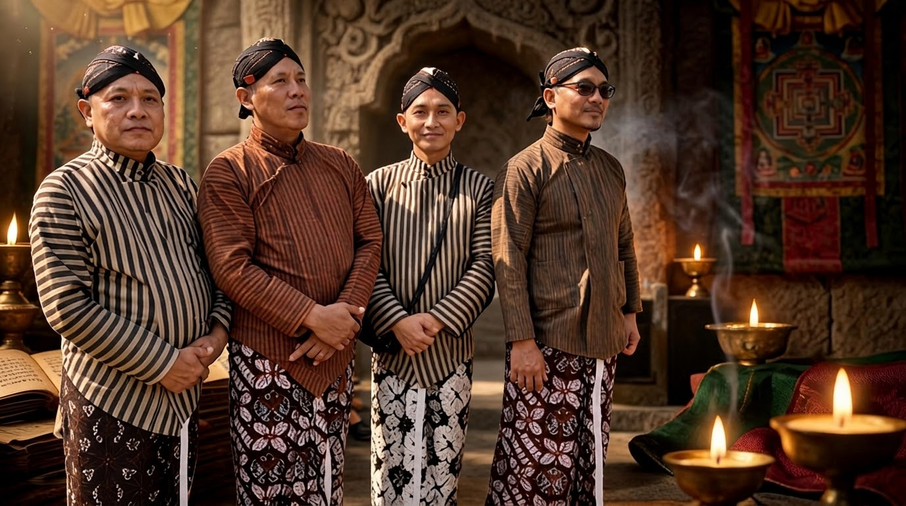

Jalan Perbaikan Diri

Pendahuluan.
Perbaikan diri merupakan bagian penting dalam perjalanan manusia untuk menjalani kehidupan secara lebih baik, benar, dan bermakna. Setiap manusia memiliki kesempatan untuk mengenali dirinya, memahami berbagai kecenderungan yang muncul dalam batinnya, serta memperbaiki perilaku yang belum selaras dengan nilai-nilai keutamaan. Namun, perbaikan diri tidak cukup dilakukan dengan mengubah perilaku yang tampak dari luar. Perbaikan diri juga membutuhkan kesadaran terhadap proses batin yang melandasi pikiran, perasaan, kehendak, dan tindakan manusia.
Dalam Kawruh Uttamopadesa, jalan perbaikan diri berkaitan dengan upaya manusia untuk mengenali dan memahami dirinya melalui aktivitas Cipta, Rasa, dan Karsa. Ketiganya merupakan bagian penting dalam kehidupan manusia yang perlu diperhatikan dalam menjalani laku. Melalui pengenalan terhadap aktivitas Cipta, Rasa, dan Karsa, manusia dapat memahami bagaimana dirinya berpikir, merasakan, menghendaki, dan bertindak dalam menghadapi berbagai keadaan kehidupan.
Jalan perbaikan diri bukanlah perjalanan untuk menjadikan diri merasa lebih tinggi daripada orang lain. Sebaliknya, jalan ini merupakan proses untuk menyadari kekurangan diri, memperbaiki kecenderungan yang tidak tepat, mengembangkan keutamaan, dan mewujudkan keselarasan dalam kehidupan. Perbaikan diri menjadi laku yang berlangsung secara berkelanjutan, seiring dengan bertambahnya pengalaman dan kedalaman pengenalan terhadap diri sendiri.
1. Mengenali Diri sebagai Langkah Awal.
Perbaikan diri dimulai dari kesediaan untuk mengenali diri sendiri. Seseorang tidak dapat memperbaiki sesuatu yang tidak disadarinya. Oleh karena itu, pengenalan diri menjadi langkah awal yang penting dalam menjalani kehidupan yang berlandaskan kesadaran.
Mengenali diri berarti memperhatikan bagaimana Cipta bekerja, bagaimana Rasa bergerak, dan bagaimana Karsa mengarahkan tindakan. Ketika menghadapi suatu keadaan, manusia dapat mengamati pikiran yang muncul, perasaan yang menyertainya, serta kehendak yang mendorongnya mengambil keputusan.
Melalui pengamatan tersebut, manusia memperoleh kesempatan untuk memahami kebiasaan dan kecenderungannya sendiri. Ia dapat mengenali kapan pikirannya menjadi keruh, kapan perasaannya dipengaruhi oleh kepentingan pribadi, dan kapan kehendaknya tidak lagi diarahkan kepada keutamaan.
Pengenalan diri membutuhkan kejujuran batin. Seseorang perlu bersedia melihat kekurangan dirinya tanpa menutup-nutupi, tetapi juga tanpa merendahkan dirinya secara berlebihan. Tujuannya bukan untuk menyalahkan diri, melainkan memahami keadaan diri sebagai dasar bagi perbaikan.
Dengan demikian, pengenalan diri bukan sekadar mengumpulkan pengetahuan mengenai kepribadian, melainkan membangun kesadaran terhadap aktivitas diri yang berlangsung dalam kehidupan sehari-hari.
2. Menjernihkan Cipta.
Cipta berperan dalam aktivitas berpikir, memahami, mempertimbangkan, dan membentuk pemaknaan terhadap berbagai keadaan. Apa yang dipikirkan manusia dapat memengaruhi perasaan, kehendak, dan tindakannya. Oleh sebab itu, perbaikan diri membutuhkan perhatian terhadap kejernihan Cipta.
Cipta yang belum jernih dapat menyebabkan seseorang menilai keadaan secara tergesa-gesa, mempertahankan prasangka, atau mengambil keputusan berdasarkan pemahaman yang belum memadai. Dalam keadaan demikian, seseorang mudah menganggap pandangannya sendiri sebagai kebenaran tanpa memberikan ruang bagi pemeriksaan kembali.
Menjernihkan Cipta berarti membiasakan diri untuk berpikir secara cermat, tidak terburu-buru dalam mengambil kesimpulan, dan bersedia memeriksa kembali alasan di balik suatu keputusan. Kejernihan berpikir juga membutuhkan kemampuan membedakan antara kenyataan yang dihadapi dan penilaian pribadi terhadap kenyataan tersebut.
Dalam jalan perbaikan diri, kejernihan Cipta tidak cukup diwujudkan melalui kemampuan berpikir yang baik. Kejernihan itu perlu terlihat dalam cara seseorang memahami persoalan, mempertimbangkan akibat tindakan, dan menentukan pilihan yang patut dilakukan.
Dengan Cipta yang semakin jernih, manusia mempunyai landasan yang lebih baik untuk memahami dirinya dan menjalani kehidupan secara bertanggung jawab.
3. Menata dan Menjernihkan Rasa.
Rasa berkaitan dengan pengalaman batin yang menyertai kehidupan manusia. Berbagai keadaan dapat menimbulkan kegembiraan, kesedihan, kemarahan, kecemasan, ketenangan, maupun perasaan lainnya. Pengalaman tersebut merupakan bagian dari kehidupan, tetapi manusia perlu memahami bagaimana Rasa memengaruhi sikap dan tindakannya.
Perbaikan diri tidak berarti menghilangkan seluruh perasaan yang tidak menyenangkan. Yang diperlukan ialah kesadaran untuk mengenali gerak Rasa dan memahami pengaruhnya terhadap keputusan yang diambil.
Ketika kemarahan muncul, misalnya, seseorang dapat memperhatikan bagaimana perasaan tersebut memengaruhi pikirannya dan mendorongnya untuk bertindak. Dengan menyadari proses itu, ia mempunyai kesempatan untuk tidak langsung mengikuti dorongan yang muncul.
Menjernihkan Rasa juga berarti mengembangkan ketulusan, kepedulian, dan kemampuan menghargai orang lain. Seseorang belajar untuk tidak menjadikan kepentingan pribadinya sebagai satu-satunya ukuran dalam menilai keadaan. Ia berusaha memahami bahwa tindakan yang dilakukan dapat membawa akibat bagi kehidupan orang lain.
Rasa yang semakin tertata membantu manusia menghadapi berbagai keadaan dengan lebih tenang dan proporsional. Ketulusan Rasa menjadi bagian penting dalam perbaikan diri karena keutamaan tidak hanya menyangkut apa yang dilakukan, tetapi juga berkaitan dengan sikap batin yang menyertai tindakan tersebut.
4. Mengarahkan Karsa kepada Keutamaan.
Karsa merupakan kehendak yang mengarahkan manusia kepada tindakan. Setelah seseorang memikirkan suatu keadaan dan mengalami gerak Rasa, Karsa berperan dalam menentukan arah yang hendak ditempuh.
Dalam jalan perbaikan diri, Karsa perlu diarahkan kepada keutamaan. Kehendak yang hanya mengikuti kepentingan sesaat dapat mendorong seseorang mengabaikan pertimbangan yang lebih luas. Sebaliknya, Karsa yang berlandaskan kejernihan Cipta dan ketulusan Rasa membantu manusia menentukan tindakan yang lebih tepat.
Karsa Utama atau Karsa Sejati diwujudkan melalui kehendak yang diarahkan kepada keutamaan dan dinyatakan dalam laku. Kehendak yang baik tidak berhenti sebagai niat atau pernyataan, tetapi diwujudkan dalam tindakan nyata.
Seseorang dapat berniat menjadi pribadi yang jujur, tetapi niat tersebut perlu dibuktikan ketika menghadapi keadaan yang menguntungkan dirinya untuk berkata tidak benar. Seseorang dapat menghendaki kerukunan, tetapi kehendak itu perlu diwujudkan melalui kesediaan menghormati orang lain dan menyelesaikan persoalan secara patut.
Dengan demikian, perbaikan diri tidak cukup hanya melalui pemahaman dan niat baik. Karsa perlu menjadi penggerak bagi tindakan yang sesuai dengan nilai-nilai keutamaan.
5. Mewujudkan Perbaikan Diri dalam Laku Sehari-hari.
Jalan perbaikan diri memperoleh maknanya ketika diwujudkan dalam kehidupan sehari-hari. Kesadaran terhadap Cipta, Rasa, dan Karsa perlu hadir dalam hubungan dengan keluarga, masyarakat, lingkungan, dan berbagai keadaan yang dihadapi manusia.
Dalam kehidupan keluarga, perbaikan diri dapat diwujudkan melalui kesediaan mendengarkan, mengendalikan ucapan yang menyakiti, dan bertanggung jawab terhadap kewajiban. Dalam kehidupan bermasyarakat, perbaikan diri tampak melalui sikap menghormati sesama, menjaga kepercayaan, serta mempertimbangkan kepentingan bersama.
Dalam menghadapi perbedaan pendapat, seseorang dapat melatih kejernihan Cipta dengan memeriksa persoalan secara cermat, menata Rasa agar tidak dikuasai kemarahan, dan mengarahkan Karsa untuk mencari penyelesaian yang patut. Melalui proses tersebut, nilai-nilai keutamaan tidak berhenti sebagai gagasan, tetapi menjadi bagian dari perilaku.
Laku perbaikan diri juga membutuhkan kesediaan untuk mengevaluasi tindakan yang telah dilakukan. Ketika menyadari adanya kekeliruan, seseorang perlu mengakui dan memperbaikinya. Ketika memperoleh pengalaman baru, ia dapat menggunakannya untuk memperdalam pengenalan diri.
Perbaikan diri tidak selalu berlangsung melalui perubahan besar. Kebiasaan kecil yang dilakukan secara sadar dan konsisten dapat menjadi bagian penting dari pembentukan perilaku yang lebih baik.
6. Perbaikan Diri sebagai Laku Berkelanjutan.
Perbaikan diri bukanlah keadaan yang dicapai sekali lalu selesai. Manusia terus berhadapan dengan perubahan keadaan, pengalaman, hubungan, dan persoalan kehidupan. Setiap keadaan memberikan kesempatan untuk mengenali kembali aktivitas dirinya dan memperbaiki tindakan yang belum sesuai dengan keutamaan.
Dalam Kawruh Uttamopadesa, jalan perbaikan diri dapat dipahami sebagai proses yang melibatkan pengenalan diri, kejernihan Cipta, ketulusan Rasa, dan pengarahan Karsa kepada keutamaan. Keempat hal tersebut tidak berdiri sendiri, melainkan saling berkaitan dalam kehidupan manusia.
Cipta yang jernih membantu manusia memahami keadaan. Rasa yang tulus mendukung sikap yang tidak semata-mata berpusat pada kepentingan pribadi. Karsa yang utama mengarahkan pemahaman dan sikap batin menjadi tindakan nyata. Melalui aktivitas ketiganya, manusia dapat terus memperhatikan dan memperbaiki cara menjalani kehidupan.
Keberhasilan perbaikan diri tidak semata-mata diukur dari pengakuan orang lain atau penampilan yang terlihat baik. Hal yang lebih penting ialah kesungguhan seseorang dalam mengenali kekurangan, memperbaiki kesalahan, memelihara kejujuran, dan mewujudkan keutamaan dalam tindakan.
Jalan ini membutuhkan ketekunan dan kerendahan hati. Semakin seseorang mengenali dirinya, semakin terbuka pula kesempatan untuk memahami hal-hal yang masih perlu diperbaiki. Kesadaran tersebut bukan alasan untuk merasa rendah diri, melainkan dorongan untuk terus bertumbuh melalui laku yang nyata.
Penutup.
Jalan Perbaikan Diri dalam Kawruh Uttamopadesa merupakan proses berkelanjutan untuk mengenali diri dan memperbaiki cara menjalani kehidupan melalui aktivitas Cipta, Rasa, dan Karsa. Pengenalan diri menjadi langkah awal, kejernihan Cipta membantu memahami keadaan, ketulusan Rasa mendukung sikap yang patut, dan Karsa Utama mengarahkan seluruh pemahaman tersebut menjadi tindakan nyata.
Perbaikan diri tidak dimaksudkan untuk membangun keunggulan atas orang lain, melainkan untuk memperbaiki kualitas diri dan mewujudkan keutamaan dalam kehidupan. Setiap kekeliruan dapat menjadi kesempatan untuk belajar, setiap pengalaman dapat menjadi sarana pengenalan diri, dan setiap tindakan dapat menjadi ruang untuk mempraktikkan kesadaran.
Dengan demikian, jalan perbaikan diri bukan sekadar usaha untuk menjadi pribadi yang tampak lebih baik, melainkan kesungguhan untuk terus menjernihkan Cipta, menuluskan Rasa, dan mengutamakan Karsa dalam laku kehidupan sehari-hari.
FAQ - Jalan Perbaikan Diri.
1. Apa yang dimaksud dengan jalan perbaikan diri dalam Kawruh Uttamopadesa?
Jalan perbaikan diri adalah proses mengenali diri, memperbaiki kecenderungan yang belum tepat, serta mengembangkan keutamaan melalui aktivitas Cipta, Rasa, dan Karsa.
2. Mengapa pengenalan diri menjadi langkah awal perbaikan diri?
Pengenalan diri membantu seseorang menyadari pikiran, perasaan, kehendak, dan perilakunya sehingga ia dapat mengetahui hal-hal yang perlu diperbaiki.
3. Apa hubungan Cipta, Rasa, dan Karsa dengan perbaikan diri?
Cipta berperan dalam memahami dan mempertimbangkan keadaan, Rasa berkaitan dengan pengalaman serta sikap batin, sedangkan Karsa mengarahkan kehendak menjadi tindakan.
4. Bagaimana cara menjernihkan Cipta dalam kehidupan sehari-hari?
Dengan berpikir secara cermat, tidak tergesa-gesa mengambil kesimpulan, memeriksa prasangka, dan mempertimbangkan akibat dari setiap keputusan.
5. Apa peran Karsa Utama dalam jalan perbaikan diri?
Karsa Utama mengarahkan kehendak kepada keutamaan dan mewujudkan niat baik dalam tindakan yang nyata, bertanggung jawab, dan patut.
6. Apakah perbaikan diri dapat dianggap selesai?
Perbaikan diri merupakan laku berkelanjutan. Setiap pengalaman dan keadaan dapat menjadi kesempatan untuk memperdalam pengenalan diri serta memperbaiki tindakan.